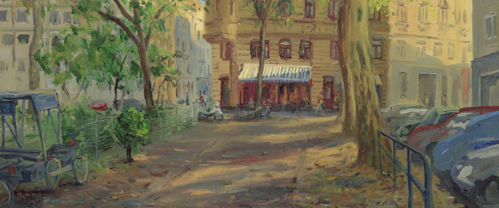
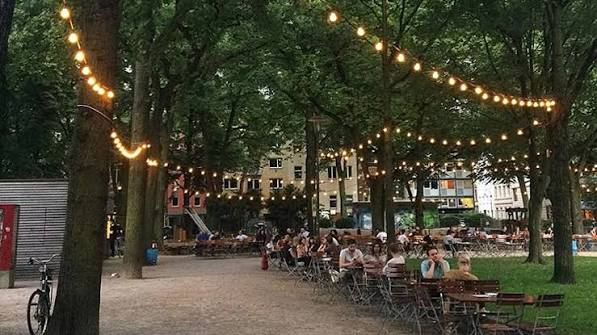
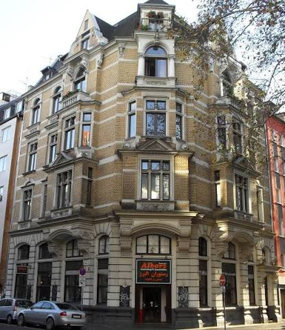
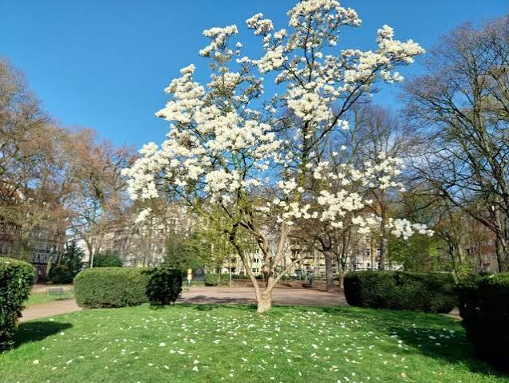

Spielplätze
Die beiden Spielplätze gehören zu den Treffpunkten für Familien am Platz. Schau vor Ort, welcher gerade zu euch passt.




Der Biergarten gehört der Bürgergemeinschaft Rathenauplatz und wird seit 2026 von der Comedia-Gastronomie betrieben.
Anfang April bis Ende September, bei gutem Wetter. Außerhalb der Saison findest du unten Alternativen im Veedel.
Reguläre Saisonzeiten bei gutem Wetter. Keine Live-Auskunft über wetterbedingte Schließungen.
Speisen & GetränkeBar, mit Karte oder mit dem Smartphone.
Es werden keine Reservierungen angenommen – auch nicht für Gruppen.
Ja, freies WLAN mit 2,4 und 5 GHz. Laut Betreiber steht es rund um die Uhr zur Verfügung.
Quelle: Bürgergemeinschaft · Biergarten · geprüft am 16.11.2026
Bis zu deinem nächsten Snack ist es nicht weit: Rund um den Platz liegen Kioske und Lokale. Die Kartenlinks helfen dir, den Weg und die aktuellen Öffnungszeiten zu finden.
Kiosk am Rathi · auf der Karte ansehen
Kiosk im Veedel · auf der Karte ansehen
Auf dem Rathenauplatz wird seit den 1980er-Jahren Boule gespielt. Die Pétanque-Freunde heißen auch Neugierige und Anfänger willkommen.
Die Pétanque-Freunde verleihen Kugeln. Sprich die Spielenden vor Ort an und frage nach der Ausleihe.
Abholpunkt, Pfandhöhe und Rückgabezeiten sind noch nicht bestätigt. Kläre diese Punkte vor dem Ausleihen.
Ziel ist es, die eigenen Kugeln näher an die kleine Zielkugel zu spielen als das andere Team.
Die Spielregeln ansehenDie Pétanque-Freunde laden ausdrücklich zum Ausprobieren ein. Sprich sie auf dem Platz an; bei organisierten Spielen fragst du am besten vorher nach.
Die beiden Spielplätze gehören zu den Treffpunkten für Familien am Platz. Schau vor Ort, welcher gerade zu euch passt.
Schläger und Ball einpacken – und eine Runde an der Tischtennisplatte verabreden.
Für eine Runde auf dem Fußballplatz den eigenen Ball mitbringen.
Spielangebote aus dem Projektmaterial. Eine Fotoübersicht beider Spielplätze liegt noch nicht vor.
Spielplätze auf der Karte Toilette & praktische FragenTreff dich mit Freunden, such dir eine Bank oder mach eine kleine Lesepause. Zwischen Spielplätzen und Biergarten ist Raum für einen Nachmittag im Veedel.
Im offenen Bücherschrank kannst du Bücher kostenlos mitnehmen und eigene Bücher für andere einstellen.
Die Bürgergemeinschaft lädt zum Entnehmen und Einstellen ein; eine Tauschpflicht nennt sie nicht. Beachte auch die Hinweise am Schrank.
Stelle sie in den Schrank. Bitte nichts daneben oder auf dem Dach ablegen.
Eine verlässlich bestätigte, öffentlich zugängliche Toilette samt Öffnungszeiten liegt für dieses Projekt noch nicht vor. Frage während der Saison beim Biergarten nach.
Auch Gebühren, barrierefreier Zugang und Wickelmöglichkeiten sind noch nicht bestätigt.
Die Bürgergemeinschaft setzt sich für das Miteinander am Rathenauplatz ein. Mit einer Idee oder Lust mitzuhelfen kannst du dich direkt beim Veedelsbüro melden.
Für dieses Projekt ist noch kein nächster Termin bestätigt. Schau in den Infokasten am Platz oder frage die Bürgergemeinschaft. Dort bekommst du auch Auskunft zu Anmeldung, Standplätzen und Gebühren.
Dein Weg zum Rathenauplatz.
Rathenauplatz, 50674 Köln – mitten in der Neustadt-Süd.
Route planenPrüfe deine aktuelle Verbindung direkt bei der KVB. Suche als Ziel nach Rathenauplatz in Köln.
Zur KVB-FahrplanauskunftPlane eine Fahrradroute zum Platz. Freie Abstellplätze und die Zugänglichkeit der Wege prüfst du am besten vor Ort.
Fahrradroute öffnenFür dieses Projekt sind stufenfreie Zugänge und Wegoberflächen noch nicht ausreichend dokumentiert. Eine verbindliche Auskunft bekommst du über die Bürgergemeinschaft.
Diese private Studienarbeit ist im Rahmen von Integrated Design, 1. Semester, entstanden. Konzept und Gestaltung: Julius Nadolski.
Die Seite ist ein studentischer Entwurf und keine offizielle Website der Bürgergemeinschaft Rathenauplatz e. V.
Die Gestaltung folgt den Frames „home final“ und „menü final“ sowie den Ressourcen aus „entwurf_1“. Ergänzende Inhalte stammen aus dem Projektmaterial „MP_ Location Date“ und den verlinkten Seiten der Bürgergemeinschaft.
Unbestätigte Angaben sind als solche gekennzeichnet. Zuletzt inhaltlich geprüft am 16. November 2026.
Die Seite verwendet keine eigenen Analysewerkzeuge, keine Formulare und keine eingebetteten Karten. Bilder und Schriften werden mit der Site geladen. Externe Karten und weitere Angebote öffnen sich erst, wenn du ihrem Link folgst.